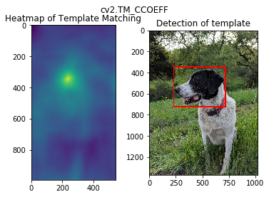
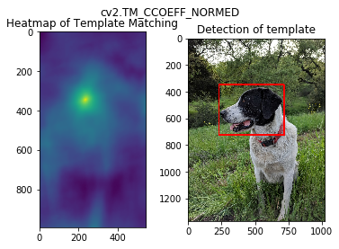
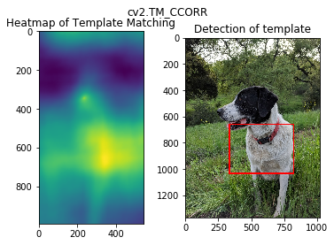
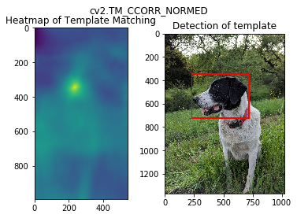
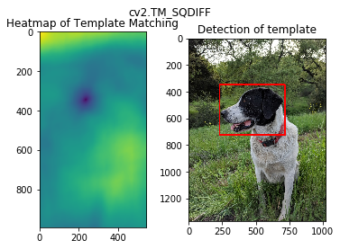
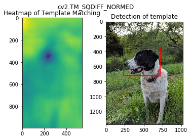

Python 3.6.8 (tags/v3.6.8:3c6b436a57, Dec 24 2018, 00:16:47) [MSC v.1916 64 bit (AMD64)]
Type "copyright", "credits" or "license" for more information.
IPython 7.2.0 -- An enhanced Interactive Python.
Restarting kernel...
In [1]: import cv2
...: import numpy as np
...: import matplotlib.pyplot as plt
...:
...: full = cv2.imread('DATA/sammy.jpg')
...: full = cv2.cvtColor(full,cv2.COLOR_BGR2RGB)
...:
...: #plt.imshow(full)
...:
...: face = cv2.imread('DATA/sammy_face.jpg')
...: face = cv2.cvtColor(face,cv2.COLOR_BGR2RGB)
...: #plt.imshow(face)
...: methods = ['cv2.TM_CCOEFF','cv2.TM_CCOEFF_NORMED','cv2.TM_CCORR','cv2.TM_CCORR_NORMED','cv2.TM_SQDIFF','cv2.TM_SQDIFF_NORMED']
...:
...: for m in methods:
...:
...: full_copy = full.copy()
...:
...: method = eval(m)
...:
...: res = cv2.matchTemplate(full_copy,face,method)
...:
...: min_val,max_val,min_loc,max_loc = cv2.minMaxLoc(res)
...:
...: if method in [cv2.TM_SQDIFF, cv2.TM_SQDIFF_NORMED]:
...: top_left = min_loc
...: else:
...: top_left = max_loc
...:
...: height,width,channels = face.shape
...:
...: bottom_right = (top_left[0]+width,top_left[1]+height)
...:
...: cv2.rectangle(full_copy,top_left,bottom_right,(255,0,0),10)
...:
...: plt.subplot(121)
...: plt.imshow(res)
...: plt.title('Heatmap of Template Matching')
...:
...: plt.subplot(122)
...: plt.imshow(full_copy)
...: plt.title('Detection of template')
...:
...: plt.suptitle(m)
...:
...: plt.show()
...:
...: print('\n')
...: print('\n')






In [2]: